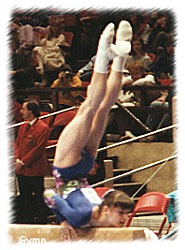

Zoya Grancharova (BUL)
1981 World FX Bronze Medalist
1982
American Cup Co-Champion
|
 Medal Total World
Championships: 1 Bronze |
Zoya was born on May 6, 1966. She was coached by Sztanka Pavlova at the Levski Spartak club in Sofia. Grancharova's FX bronze in 1981 was the first medal won by a Bulgarian female gymnast at a World Championships. She retired in 1984. In 1991, she moved to Toronto with her husband and son, Victor. Daughter Georgia was born in 1999. Zoya is currently coaching in Toronto.
Competition Results
1979
Bulgarian Spartakiad: 2nd AA, 1st FX (Candidate for Master)
1980
Balkan Championships: 2nd Team, 2nd AA
Jr. Friendship Tournament (Druzhba): 4th Team, 7th UB
1981
Balkan Championships: 2nd Team, 5th AA, 2nd V, 2nd B,
5th FX
Blume Memorial: 6th AA, 2nd UB
Golden Sands International: 1st FX
Moscow News: 10th AA
World Championships (Moscow): 4th Team, 17th AA, 3rd FX
1982
American Cup: 1st AA
Golden Sands: 2nd AA, 1st B, 1st FX
Rome Grand Prix: 8th AA
Tokyo Cup: 2nd B, 3rd FX
World Cup: 10th AA, 6th V, 8th UB, 8th B
1984
Chunichi Cup: 10th AA
CSSR Spartakiade (Olomouc): 12th AA, 5th V, 6th FX
Golden Sands: 3rd AA, 1st B
This page was created on January 27, 2000
and was last updated on May 11, 2026.
© Gymn Forum